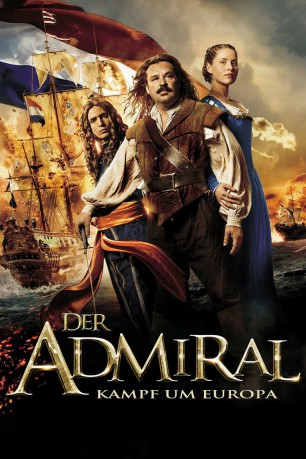
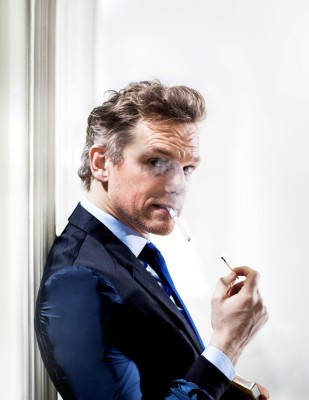
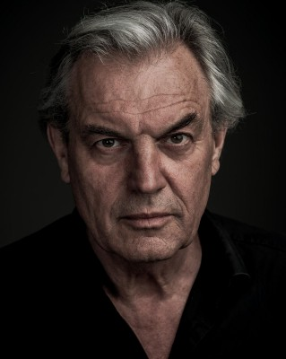
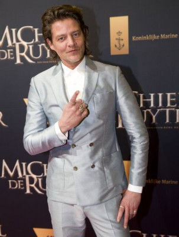
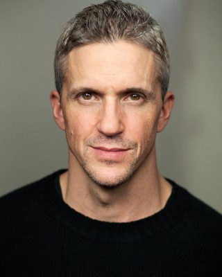
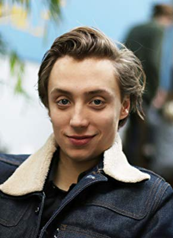

#5173 Der Admiral - Kampf um Europa
 
 IMDB-Wertung: 7.1 / 10
IMDB-Wertung: 7.1 / 10  Metascore: 0
Metascore: 0 
Mitte des 17. Jahrhunderts: Die Niederlande werden von Engländern und Franzosen belagert. Dazu droht ein Bürgerkrieg, der für die Angreifer ein gefundenes Fressen wäre. Admiral Michiel de Ruyter soll die holländische Flotte in den Krieg führen und das Land vor dem sicher scheinenden Untergang bewahren. Mit Entschlossenheit und List hat er tatsächlich Erfolg und wird zu einem gefeierten Mann. Doch de Ruyters Popularität ist den Staatsoberhäuptern ein Dorn im Auge, sie fürchten um ihre Machtposition und schicken ihn auf eine aussichtslose Militärmission.
Jahr: 2015
Dauer: 128 Minuten
FSK: 16
Land: Niederlande Studio: Lighthouse Home EntertainmentTonspuren:
Untertitel:
Auflösung: 1080p (1920x808) Größe: 6502 MB
Genre: Action, Drama, Abenteuer, Geschichte, Biographie
Regisseur: Roel Reiné
Drehbuch: Albert Charles
Soundtrack:
Darsteller:
 Rutger Hauer als Maarten Tromp
Rutger Hauer als Maarten Tromp Charles Dance als King Charles II of England
Charles Dance als King Charles II of England- Daniel Brocklebank als Lord Chancellor
- Ella-June Henrard als Mary-Stuart
- Aurélie Meriel als Louise
-  Barry Atsma als Johan de Witt
-  Derek de Lint als Kievit
 Filip Peeters als Dequesne
Filip Peeters als Dequesne- Frank Lammers als Michiel de Ruyter
-  Tygo Gernandt als Jozef van Ghent
- Egbert Jan Weeber als Willem III
- Gene Bervoets als Van Ginneken
- Lieke van Lexmond als Wendela de Witt
-  Will Bowden als Prince Rupert
- Roeland Fernhout als Cornelis de Witt
- Colin Mace als Monck
- Victor Löw als De Waerd
- Lukas Dijkema als Jan van Brakel
- Daan Aufenacker als Member of Parliament
- Thedo Keizer als Member of Parliament
- Youval Kuipers als Assassin , uncredited
- Sanne Langelaar als Anna de Ruyter
-  Nils Verkooijen als Engel de Ruyter
- Hajo Bruins als Cornelis Tromp
- Pip Pellens als Klaartje
- Jelle de Jong als Hans Willem Bentinck
- Axel Daeseleire als Konstabel 7 Provinciën
- Jules Croiset als De Graeff
- David Corbett als lord Baron
- Michael Nierse als Tom
- Bas van Prooijen als Gijs
- Joost Koning als Kees
- Dries Vanhegen als Hoogbootsman 7 provinciën
- Brian Ligthart als Dutch Sailor
- Jada Borsato als Neeltje de Ruyter
- Lars Bech als Hendrik
- Tim de Zwart als Chirurgijn 7 Provinciën
- Erik Cardon als Mayor of Flushing
- Simon Ates als Guard , uncredited
- Robbert Blokland als Angry Orangist , uncredited
- Dick Carlier als Member of Parliament , uncredited
- Vladimir Martus als Helmsman , uncredited
Datei: X:\2015(A-F)\Admiral - Kampf um Europa, Der (2015, FSK16, 1920x808).mkv seit 28.12.2016
Festplatte: HD 2015(A-Z)
 Es gibt insgesamt 143 Filme in der Gruppe '2015(A-F)'
Es gibt insgesamt 143 Filme in der Gruppe '2015(A-F)'